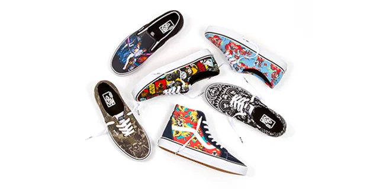
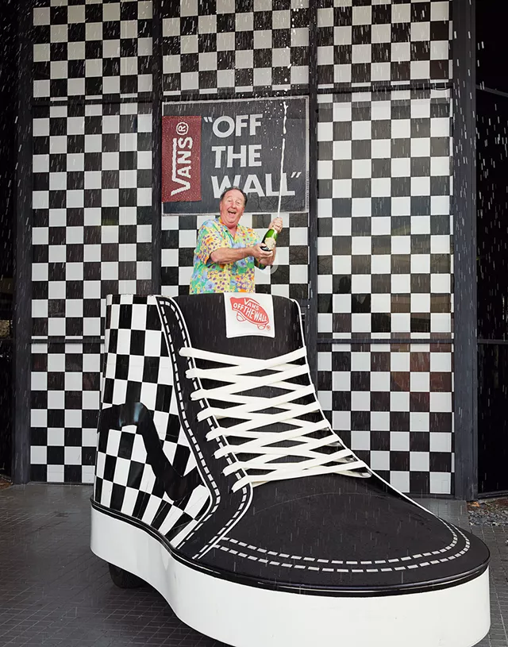

Intresting Facts
If you have ever followed an American success story, then the story of the company, Vans is just what you are looking for. This streetwear shoe & apparel manufacturer is now celebrating its years of popularity in supplying the most innovative and well-received sportswear on the market. Today one will find Vans shoes and other products the favorite of sports celebrities, top musicians, and spotlighted persons all over the world. The brand name has become synonymous with durability and subtle design and one can find a type of shoe or other merchandise for any occasion. Considering the company started out very small and had lots of competition, a lack of support, and barely enough resources to operate, it has proven itself a vanguard of independent entrepreneurship that fairy tales are made of. The creators have become legends in several areas most notably the skateboarding industry and sport. They represent that sort of pioneer spirit that folk tales are made of.
Did you know?
The company was originally founded by brothers Paul and Jim Van Doren. They had two partners along with them, Gordon Lee and Serge Delia. Vans was founded on March 16, 1966, and opened at 704 E. Broadway in Anaheim California. The first day of opening, only 12 customers showed up. The first 12 customers were asked to return later in the day to pick up their shoes as a problem had arisen. They did but the brothers had not any change and then asked the 12 customers to return the next day to pay, and all 12 did. Their most celebrated shoe is the Vans #95, aka Era, which was designed by skateboarding legends Tony Alva and Stacy Peralta. In 1997 the Vans #36 debuted as the Old Skool and is considered the hallmark shoe of the entire brand.
Vans Off The Wall Facts
In 2001, Vans bought a controlling interest in the Vans Warped Tour, Americas top action sports and music venue festival. Legends Marc Jacobs and Trovata are the designers of the Vault By Vans sneaker combinations. Legendary pro skater Anthony Van Engelen is the first person rider for Vans Apparel. The Vans + The Simpsons merchandise series features cartoons from the popular animated show and art from such popular designers as Dave Flores, Geoff McFetridge, Stash, Kaws, Sam Messner, Mr. Cartoon, Taka Hayashi, Tony Munoz, Todd James, and none other than Neckface. Pro surfer Joel Tudor is the first surfer to sign on with Vans apparel program. Vans actually has produced movies! Their first ever surf flick is called Get-N Classic, Vol. 1 and showcases Joel Tudor, John Florence, the Vans surf team & Australian, Wade Goodall.